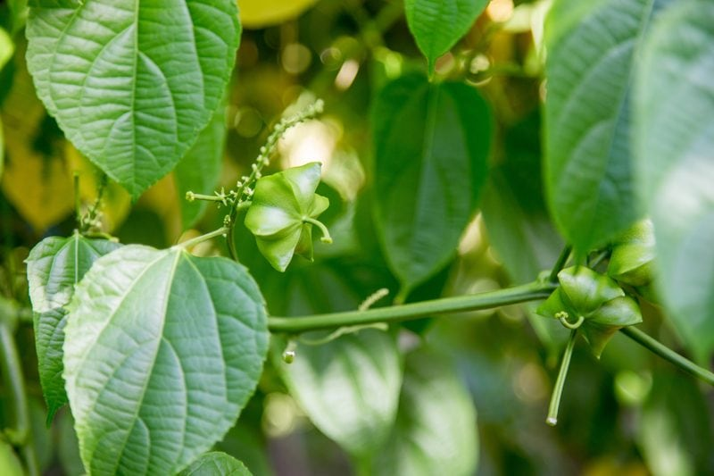
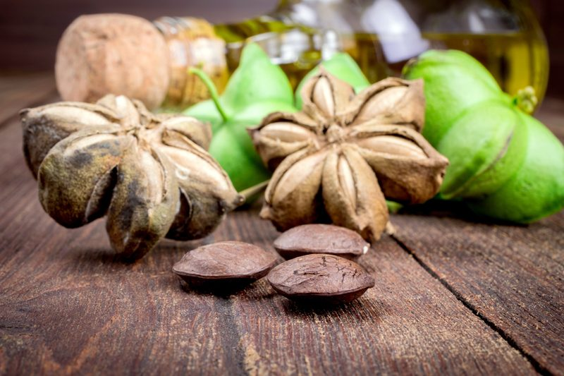

Sacha Inchi Seeds (Inca Peanut)
Sacha inchi seeds look like nuts, but they are actually a seed. They are one of the richest plant-based sources of Omega-3. Ounce for ounce, these amazing superfood seeds boast 17 times more Omega-3 than wild Sockeye salmon. (photo below) shows how the sacha inchi seeds for start out when growing.

Can you eat them Raw?
The seeds are not considered a raw food because they are unpalatable and inedible in their raw state, containing a substance which gives them a bitter taste if not heat treated.
It is best to buy seeds and powders that are created from low-temperature dried seeds or flash pasteurized varieties to avoid excessive nutritional degradation. Matt Monarch said about the raw taste: “Your mouth explodes with a puckering, cleaving unbearable taste, which permeates your tongue and all throughout your mouth!” Sacha inchi seeds must be roasted in order to be digested and assimilated by your body.
(photo below) shows the inchi seed pods

We need Omega-3 fatty acids!
Omega-3 fatty acids benefit practically every part of your body. Studies have shown positive effects on the digestive, reproductive, and nervous systems, as well as having the ability to increase psychological health, assist with allergies and help control asthma. Ok, that was one long run-on sentence, but I didn’t have time to stop and take a breath… too excited to share such news with you.
The Standard American Diet (SAD) is typically imbalanced with too many omega-6s compared to omega-3s. If you’re not deliberately making sure you’re getting your omega-3s, chances are you’re not getting enough. I use to eat walnuts for their omega-3’s and now I have these wonderful seeds to add to my dietary food bank. They have 3 times the amount of omega-3 oil found in walnuts.
Brain Food!
Sacha Inchi seeds are a great source of tryptophan which is a protein that helps the brain to produce more serotonin. Serotonin is key to mood regulation; pain perception; gastrointestinal function, including the perception of hunger and satiety; and other physical functions. (1). They are also anti-inflammatory which helps to lower inflammation of the brain which can cause fatigue, depression, and memory problems.
Complete Protein
Inca Peanuts contain every amino acid. Sacha inchi seeds also contain significant amounts of highly digestible plant-based protein, with 9 grams of complete protein per ounce — more than most nuts and seeds. They are also low in carbs. If you want to compare the carb intake between different nuts and seeds, check out (
this) site.
What do they look like?
Though I have never seen these seeds in their natural plant state, I have read that they have heart-shaped leaves about 4.0 – 4.7 inches long. It is recognized by its star-shaped fruits, which have anywhere from four to seven points. Its seeds, which contain the bulk of the plant’s nutritional value, are brown and oval, measuring 0.6 – 0.8 inches in diameter. (1)
What do they taste like?
They have a texture that is crunchy, reminiscent of peeled and dehydrated almonds. The seeds, known as Inca nuts or mountain peanuts, have a very similar peanut-like taste, but a bit dryer on the back of the tongue. If you have peanut allergies, you can use them as a peanut replacement in recipes. They add a great crunch to salads or a perfect for a swap from traditional nuts.
How to store them…
Due to their high level of fats, it is best to store the seeds in the fridge or freezer.
Where do I buy them?
I have yet to find them at my local grocery or health food stores. So far, I have been ordering them online through my Amazon store. (Here) is a link for the ones that I have tried and enjoy. I like the salted ones for snacking and the unsalted for granola recipes, making milk with them, and other recipes that may already contain salt.
© AmieSue.com